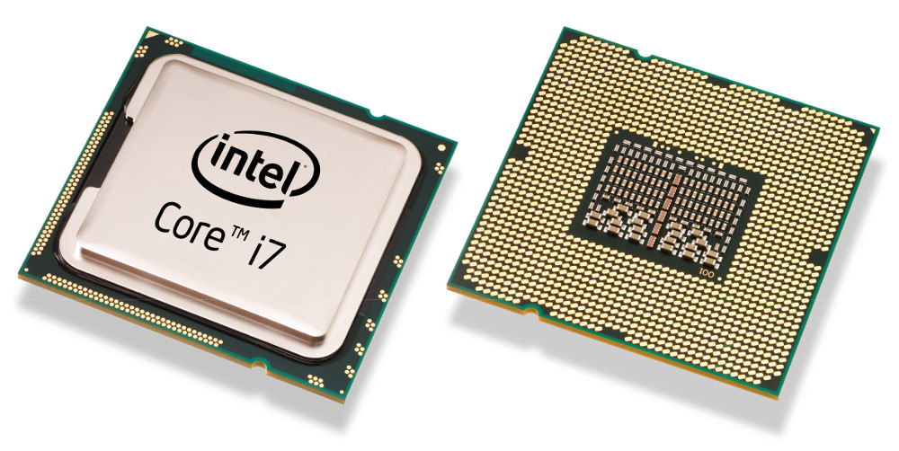
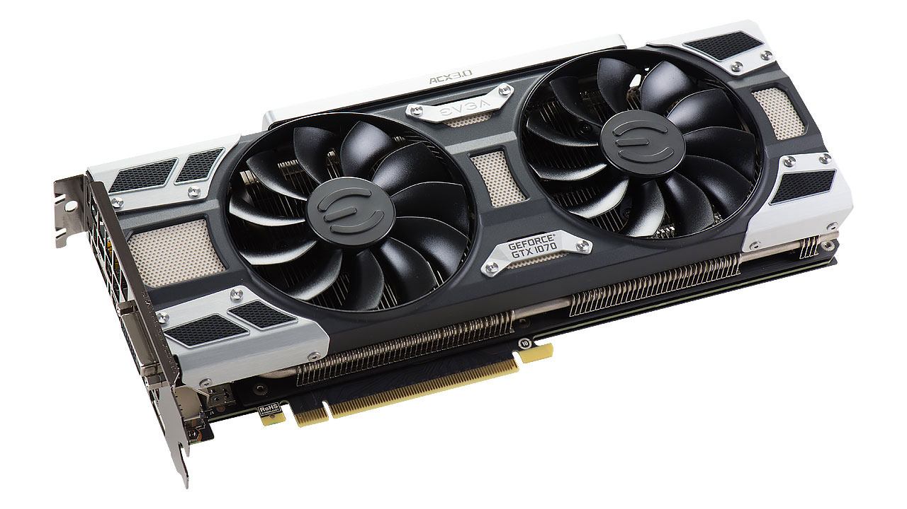
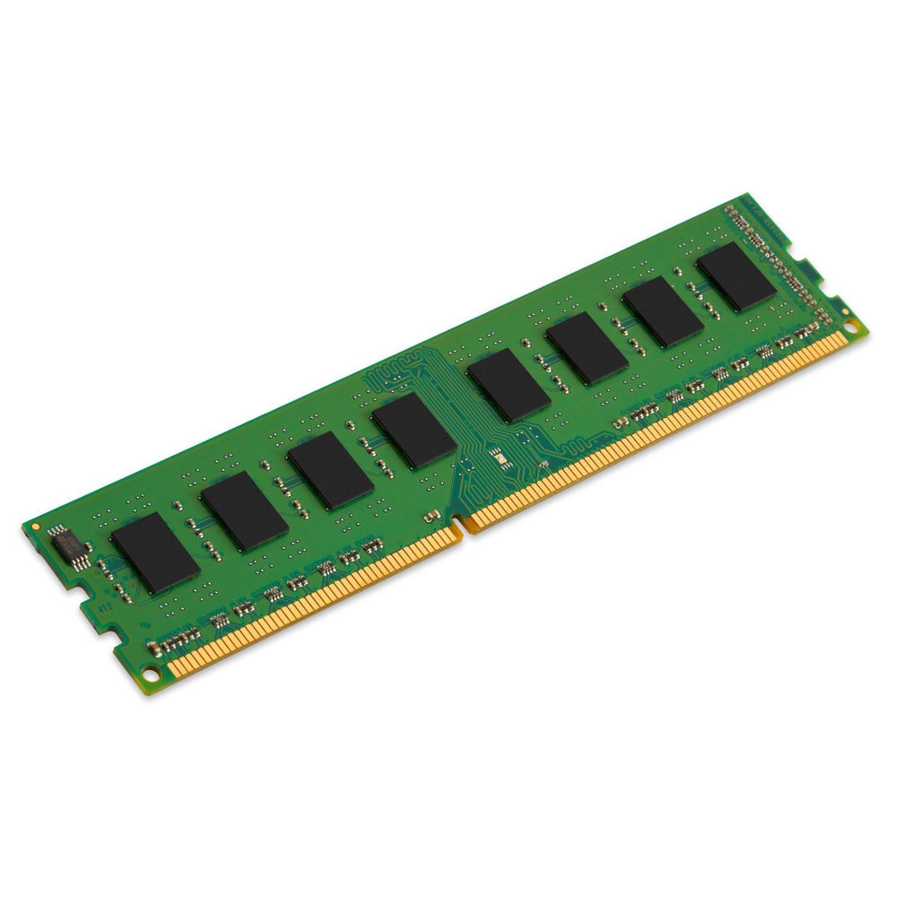
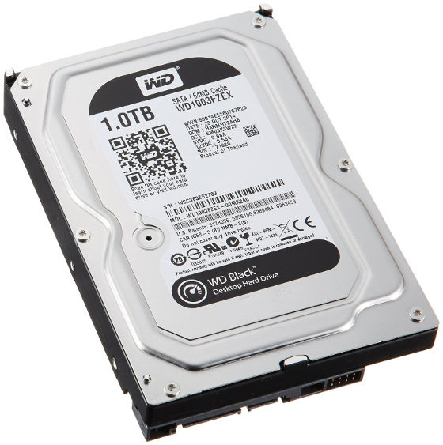
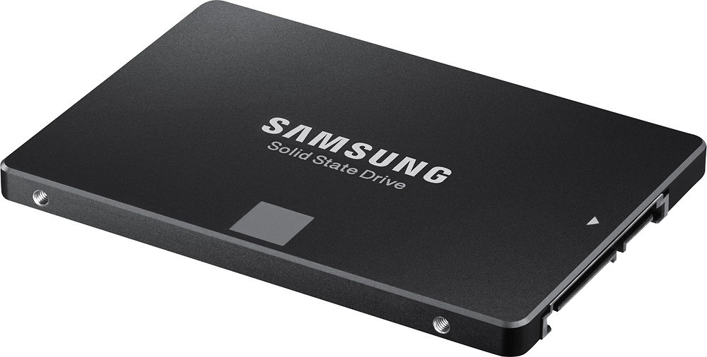
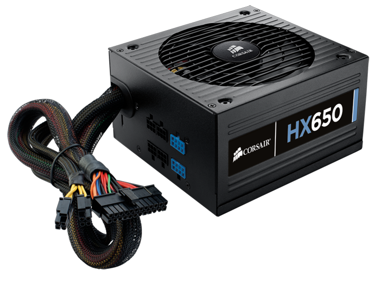
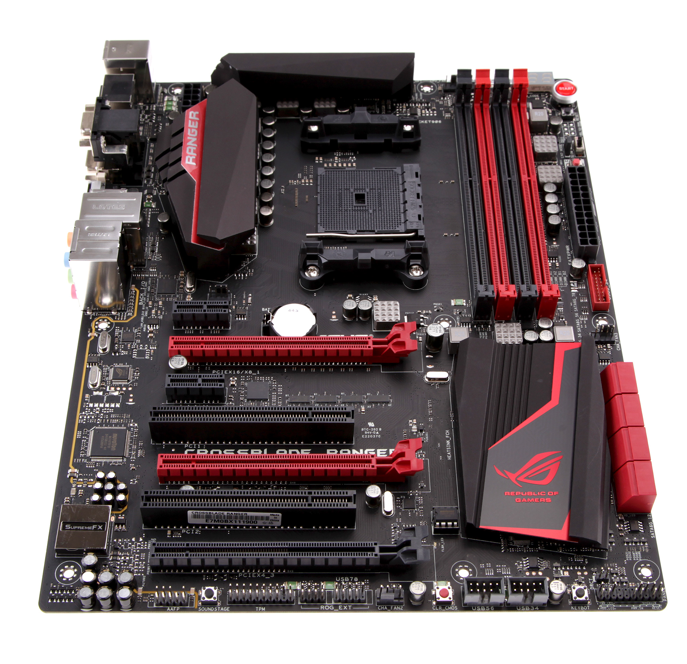

Building a Computer
Computers are everywhere and used by everyone for
multitudes of reasons. Most people buy their computers off the shelf already
built, usually made by companies like Dell, HP, and Lenovo. Buying
pre-built computers comes built in fees for putting the computer together
and testing and even for simply having a certain brands logo on it.
It is also quite often that the
components used in these computers aren’t the latest and greatest and aren’t
as good as they should be for the price range the computer is being sold
for.
PC gaming has become much more popular in the last
few years giving a rise in popularity to PC building. The rise of PC building
has also brought about innovations that have made it easier for the average
user to build a powerful computer. Building a PC, simply put, involves ordering the
computer parts that fit your budget and putting them in the right slots,
almost like Legos for adults. There are seemingly endless combinations you can use to find the right PC for
your needs and even your personality with different choices in color scheme.
To first understand how to build a computer, however,
one must know all the required components that is needed and know what they
are used for to better understand what fits their needs.
| Components in a Computer | Processor (CPU) |
The central processing unit (CPU), also
called a processor, is located inside the computer case on the
motherboard. It is sometimes called the brain of the computer, and
its job is to carry out commands. Whenever you press a key, click
the mouse, or start an application, you're sending instructions to
the CPU. The CPU is usually a two-inch ceramic square with a silicon chip located inside. The chip is usually about the size of a thumbnail. The CPU fits into the motherboard's CPU socket, which is covered by the heat sink, an object that absorbs heat from the CPU. A processor's speed is measured in megahertz (MHz), or millions of instructions per second; and gigahertz (GHz), or billions of instructions per second. A faster processor can execute instructions more quickly. However, the actual speed of the computer depends on the speed of many different components—not just the processor. |
|---|---|
Graphics Processing
Unit |
A GPU is an expansion
card which generates a feed of output images to a display/monitor.
The GPU is a discrete or dedicated card meant for processing images
and visual effects more effectively than the CPU. It is similar to
how a CPU functions using cores, however, GPUs will have many more
cores that are lower power and do simple tasks in parallel to
compute the results faster than the CPU could as it has less cores
but each one is very powerful. CPUs will often contain an integrated graphics chip that is suitable for video playback and some light gaming. Dedicated graphics cards will greatly increase performance in more intensive games and applications that utilize the GPU. |
Memory (RAM) |

RAM is your system's short-term memory. Whenever your computer
performs calculations, it temporarily stores the data in the RAM
until it is needed. This short-term memory disappears when the computer is turned off. If you're working on a document, spreadsheet, or other type of file, you'll need to save it to avoid losing it. When you save a file, the data is written to the hard drive, which acts as long-term storage. RAM is measured in megabytes (MB) or gigabytes (GB). The more RAM you have, the more things your computer can do at the same time. If you don't have enough RAM, you may notice that your computer is sluggish when you have several programs open. Because of this, many people add extra RAM to their computers to improve performance. |
Hard Disk Drives (HDD) |

The hard drive is where your software, documents, and other files
are stored. The hard drive is long-term storage, which means the
data is still saved even if you turn the computer off or unplug it.
When you run a program or open a file, the computer copies some of the data from the hard drive onto the RAM. When you save a file, the data is copied back to the hard drive. The faster the hard drive, the faster your computer can start up and load programs. HDDs can have large capacity of storage for low cost per Gigabyte of storage, especially when compared to solid-state drives |
Solid State Drives (SSD) |
A solid state drive is a device that uses
integrated circuit assemblies as memory to store data persistently.
SSDs have no moving mechanical parts like HDDs do, which makes them
more resistent to physical shock, and allows them to run silently.
SSDs are much faster and have lower latency than HDDs but currently
are more expensive per Gigabyte of storage. A common setup is to have a SSD as the drive with the operating system on it, while having an HDD for mass storage like games and other large applications. This allows the user to benefit from the increased boot time speed and overall speed of the operating system while still maintaining necessary storage space for programs or files that do not require the extra speed of the SSD. |
Power Supply Unit (PSU) |
A power supply unit
converts AC power from the wall to low-voltage regulated DC power
for the internal componenets of a computer. The PSU connects to
certain devices within the computer that requires power such as the
motherboard, GPU, and disk drives. Many of the parts that plug into
the motherboard receive power from the motherboard which receives
the power from the PSU, and even the graphics cards can receive some
of the power from the motherboard while at the same time using power
straight from the PSU. There are different power ratings that range from 250 watts to over 1000 watts, which determines the maximum power draw that is limited on that specific PSU. Efficiency also plays a role into power supplies, in which the higher quality PSUs will have the "80 plus" branding on them to determine the efficiency. The "80 plus" branding has multiple tiers of quality ranging from "80 plus" to "80 plus titanium" with multiple other levels in between which are a simple way of knowing the efficiency of the power supply. The greater the efficiency, the greater the savings on power use and lower heat output, however, the benefits are more substantial on computers that use a lot of power compared to less power hungry hardware. |
Motherboard |
The
motherboard is the part of the computer that connects all the parts
and allows them to communicate with each other. You directly install
the CPU, RAM, and GPU on the motherboard with the storage drives
being connected via Sata cable to the motherboard. The motherboard also contains all the ports for peripherals like a mouse, keyboard, and audio device. Motherboards are made to work with specific models of CPUs which use the same socket type. A socket 1151 motherboard will support CPUs that specify support for 1151 socket type, any other CPU will not fit or work properly unless otherwise specified. |